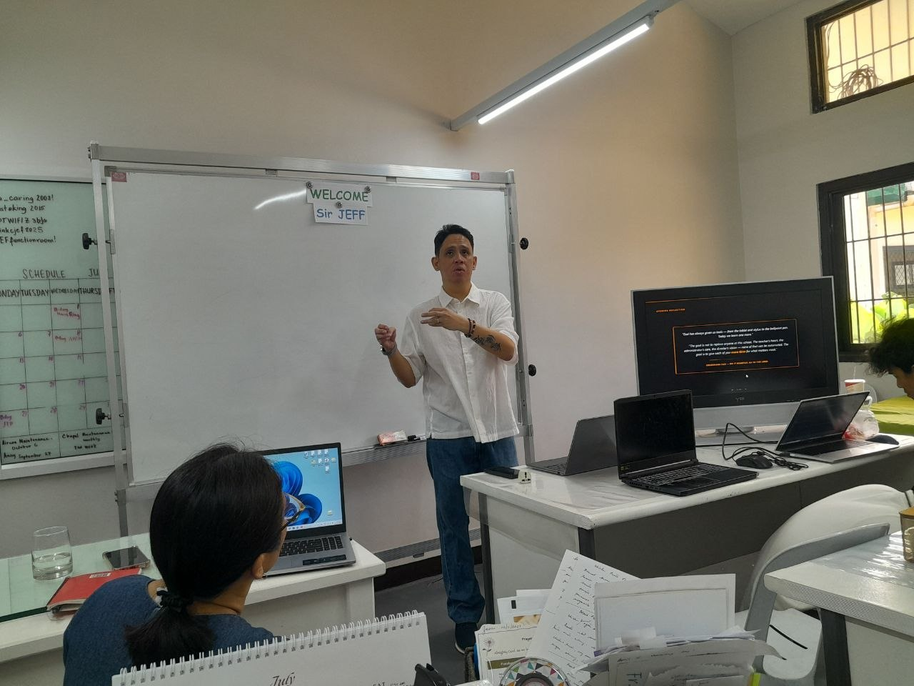
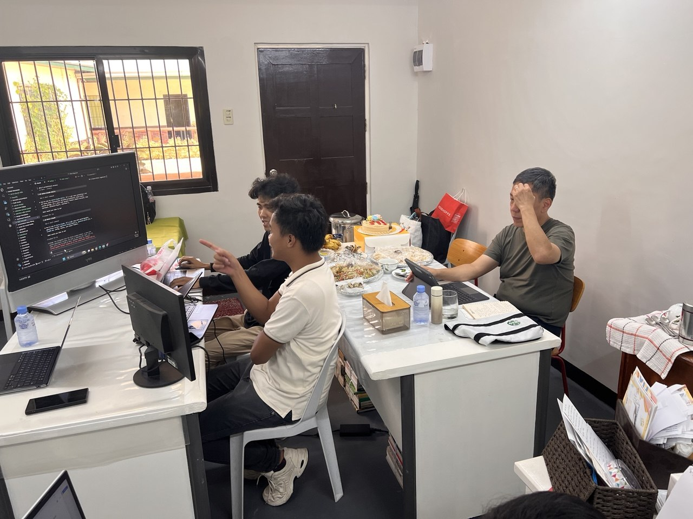
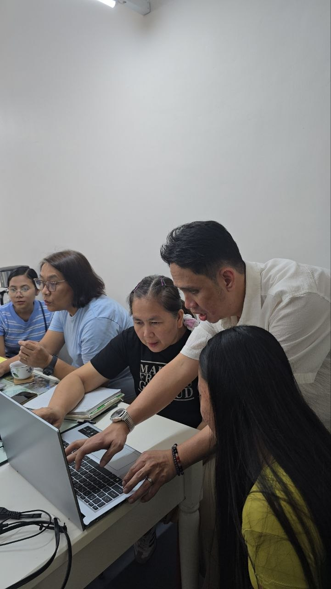
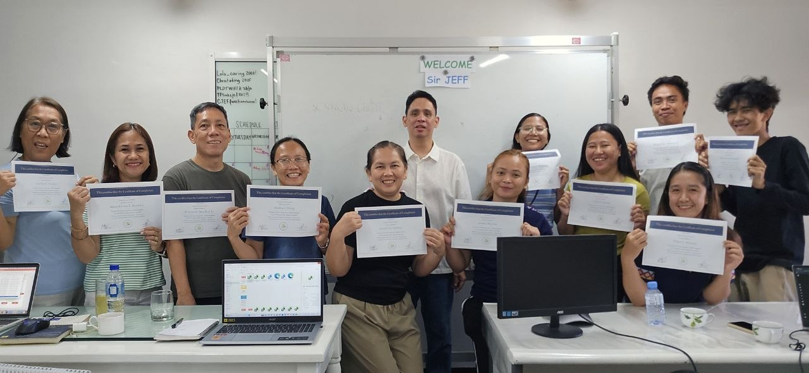

SEMINAR DIARIES · CJEF01 / 05
HINDI ITO
AI DEMO.
Totoong training ito. Sa isang classroom, kasama ang mga guro at school staff.

JULY 6, 2026 · CJEF02 / 05
MULA SA
TANONG...
Paano gagamitin ang AI sa araw-araw na schoolwork?
Hindi kailangang maging “techy” para magsimula.

HANDS-ON, HINDI SLIDES LANG03 / 05
...HANGGANG
SUBUKAN
NILA.
Tito AI sa tabi nila, habang sila mismo ang gumagamit ng tool.
ANG MAHALAGANG HABIT04 / 05
AI ANG
KATULONG.
TAO ANG
NAGRE-REVIEW.
Subukan ang prompt. Basahin ang sagot. I-check bago gamitin.

SEMINAR DIARIES · CJEF05 / 05
NEXT TIME,
KAYO NAMAN?
Gusto mong matuto ng AI na may kasamang gabay?
Comment TRAINING. Tito AI — AI para sa ating lahat.